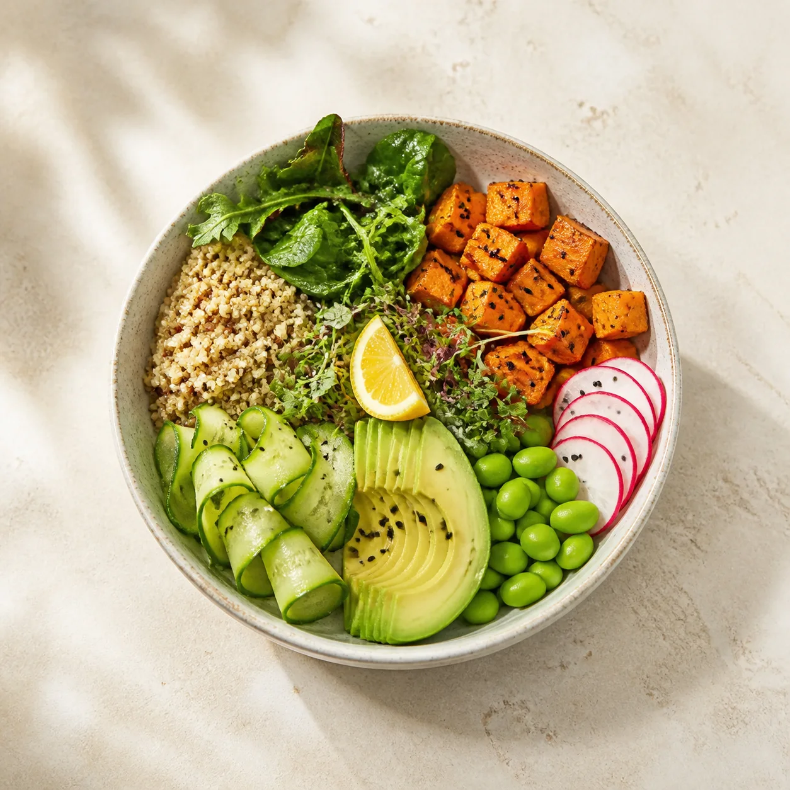
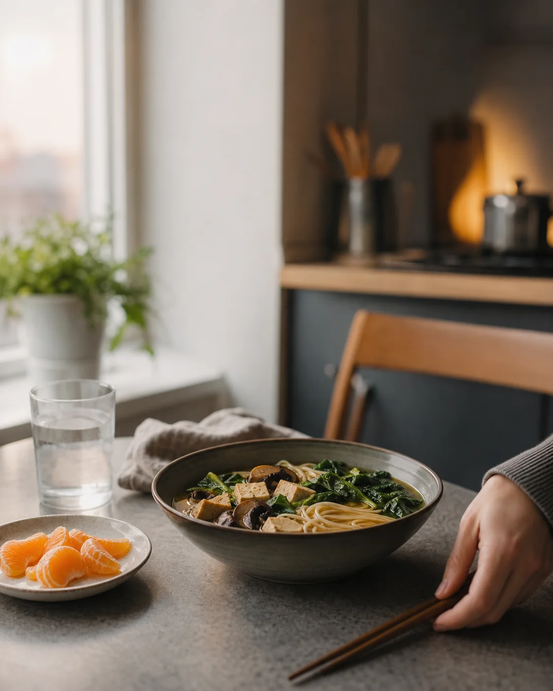

◷
Plan in minutes
Answer a few thoughtful questions and get a complete week built around your actual calendar.
Weekly nutrition, made realistic
A flexible meal plan shaped around your schedule, goals, and tastes—so you always know what to cook, shop for, or grab on the go.



Less deciding. More nourishing.
Good nutrition shouldn't require perfect Sundays, endless prep, or a degree in macros.
Answer a few thoughtful questions and get a complete week built around your actual calendar.
Swap meals, use leftovers, and change serving sizes without breaking your nutrition targets.
Simple, credible guidance explains the “why” without turning every meal into a math problem.
From blank week to ready
One smart setup. Seven days of calm, practical decisions.
Choose your goals, dietary needs, cooking comfort, budget, and busiest days.
See quick breakfasts, portable lunches, weeknight dinners, and smart snack options.
Use one organized grocery list, then swap or scale meals whenever plans change.
Nutrition without the noise
Nourish Plan translates nutrition science into small, satisfying choices—then leaves room for takeout, dinner with friends, and the foods you love.
A week you can actually follow
Tap a day to preview how your plan adapts across the week.
Real weeks, made easier
“I stopped buying aspirational groceries and started making food I genuinely had time to eat.”
Build a practical plan in under five minutes. No credit card needed.
Step 1 of 3
Choose the goal that matters most right now.
Step 2 of 3
We'll keep the busiest days deliberately easy.
Step 3 of 3
Your plan will leave open space for everything else.
We've saved your preferences. Your personalized plan preview is ready to build.